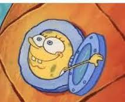

--Rumi (partial)
"I’ll tell you what hermits realize. If you go off into a far, far forest and get very quiet, you’ll come to understand that you’re connected with everything.”
--Alan Watts
We call it “getting back to normal”. And oh yeah we want it.
We’re mighty tired of covid limitations and we want what is called “freedom” ASAP.
After all, normal life is busy, active, productive. Normal life is connection with other humans, and social activity, and love.
Normal is full.
We adore full. We cannot wait to be full again.
Which perhaps is why, as covid restrictions lift, people are in a hurry to visit, party, travel, consume. Give us restaurants, bars, airplanes, shopping, festivals and lots and lots of hugs.
We shall resume where we left off, and “make up for lost time.”
As if that’s possible.
We’re trying though, aiming for extra full – with extra peopling and extra indulgence. Binging and overeating, over drinking, over spending. Oh yeah.
We also want to get back to normal life as if nothing had interrupted. As if covid restrictions had never forced us to abandon how things were, with a sudden grinding halt.
Which is kind of odd. I mean, what’s to gain by trying to pretend this last year-plus never happened? Is it really necessary to undo that year, and as fast as possible?
It seems so, as the push for normalcy is strong and urgent and everywhere. Everyone knows getting back to former lives feels healthy, right, and necessary.
And certainly not many are saying, “I liked the downtime, I’m staying alone, isolated and not productive just like this, indefinitely.”
C’mon, we all know that’s not normal. So stop lazing around and get out there! Do something. Fill ‘er up.
Although, it’s not particularly “free” when it’s a requirement, an obligation, is it.
But never mind that. Because what we got in Covid-time, and what we’d would rather not ever have again thank you very much, was nothing.
Nothingness and lack and deprivation and missing out.
And far too much empty. Empty time, empty homes, empty streets, empty buildings, empty arms.
Empty is bad. Empty is unhealthy, lonely, damaged and wrong.
Humans are not fans of empty.
Anyone choosing that on purpose is in need of fixing, inquiry and help.
Full is better. Out is better. Together is better.
So it's odd that many are finding it uncomfortable to come back out and resume those old lives.
Lipstick, shoes, pants, small talk, smiling at others, sharing elevators- things can feel strange.
Partly because during lockdown, newly developed odd quirks, like maybe throwing laundry into drawers unfolded, were unseen.
And now, back in real life, people will see the wrinkles.
Oh look, the public face and pretender, the presentation and persona, returns from its year in exile.
Bringing with it the hider, the secret-keeper, of all those weird behaviors we’ve always sort-of had but allowed more fully while alone in our homes for so long.
How have we not noticed that socializing comes with more secretiveness, more self consciousness, more comparing?
“Did I say the wrong thing? Did they like me? Can they tell I am afraid? Can they tell I am weird? Was I awkward? Am I ok? Am I good enough?”
Returning to normal life means returning to more intense self watching, improving, and evaluating how we're doing.
Oh good, an evaluation of the self, performed by the self. Always a good time.
Of course it's not as if this self consciousness didn't go on in lockdown too, whether we were with other folks or alone.
I mean, even in lockdown we harangued ourselves to write that book, learn to cook, take up yoga. If we weren’t going to have a raucous good time with others, we should have at least cleaned a closet.
It’s just that when we're in others’ company, self judgment intensifies considerably.
Are we really in such a hurry to resume that? It may not necessarily be as fun as we expect.
Not to mention that the sense of being empty and not enough can often show up even when we have filled-up on all the normal socializing and eating and drinking.
So instead of trying so hard to stuff ourselves full of activities and love and enoughnesses,
which may not get us what we want anyway,
maybe we could notice that there’s something to be said for aloneness, empty time and checking less frequently on the self’s performance.
Y’know, those experiences we’ve been so eager to avoid.
Because in lockdown or not, the human can’t help trying to “make something” of itself.
Which is tricky stuff. Because how do you make something out of nothing?
And are we so sure we are even capable, that it is even possible, that we are the ones whose job it is to “make something” of time, of life, of existence, of our self?
The obligation for that kind of making, of producing, is a heavy burden.
Which is why there may be value in noticing the many advantages of covid empty time, of empty arms, of empty rooms and streets.
And why that sudden enforced lack that we're so sure happened with lockdown may actually have contained an astonishing gift we’re not likely to be blessed with ever again.
An opportunity that normal, busy public life rarely allows us to receive.
So maybe we don’t have to run away quite so hard from lockdown and isolation and emptiness and not-normal.
Maybe we don’t have to try quite so hard to regain what we think we lost.
Because that resumed normal life just might turn out to be
the actual
missing out.
Want to watch Judy's Buddha At The Gas Pump interview? click here
"That beaten track will lead you nowhere. There is no oasis situated yonder; you are stuck with the mirage."
--U.G. Krishnamurti
"If God said,
"Rumi, pay homage to everything
that has helped you enter my arms,"
there would not be one experience of my life,
not one thought, not one feeling,
not any act,
I would not
bow to."
--Rumi
